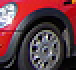

The complete list of all keyboard and mouse shortcuts in mtPaint is part of builtin help, called up by pressing F1 or by "Help->About" menu option; see the "Keyboard shortcuts" and "Mouse shortcuts" sections.
Additionally, several of the menu options have their keyboard shortcuts labelled next to the option.
Besides these, there is one optional shortcut that you may find useful: "Q" key will quit the program, if enabled through the Interface section of the Preferences window.
mtPaint can handle the following file formats:
| Format | Load | Save | Image Type |
| BMP | All. | Indexed palette. 24 bit RGB including alpha channel. | Any |
| GIF | All single images. Animation frames via Gifsicle. | Indexed palette including transparency index. Animations via Gifsicle. | Indexed |
| JPEG | All. | 24 bit RGB. | RGB |
| JPEG2000 | All. | 24 bit RGB. | RGB |
| LSS16 (*.lss) | All. | Indexed palette (16 colours), 18 bits per colour (6 per RGB channel). | Indexed with 16 colours or less |
| PNG | All. | Indexed palette. 24 bit RGB. Including transparency index, alpha/selection/mask channels. | Any |
| TGA | All. | Indexed palette. 24 bit RGB. Including alpha channel. | Any |
| TIFF | All. | Indexed palette. 24 bit RGB. Including alpha channel. | Any |
| XBM | All. | 2 colour indexed palette including hotspot. | Indexed with 2 colours |
| XPM | All with 4096 colours or less | Indexed palette. 24 bit RGB images with up to 4096 colours. Including transparency index and hotspot | Indexed, or RGB with 4096 colours or less |
File types PNG, JPEG, JPEG2000, TIFF, and GIF are handled by external libraries: libpng, libjpeg, libopenjpeg, libtiff, and libungif/giflib. As a result of this, the efficiency of these file operations will depend on the version of these libraries installed on your system. For example, libtiff is unable to read certain old JPEG compressed TIFF files. For more information on these libraries, consult their respective websites:
| libpng | http://www.libpng.org/pub/png/libpng.html |
| libjpeg | http://www.ijg.org/ |
| libopenjpeg | http://www.openjpeg.org/ |
| libtiff | http://www.libtiff.org/ |
| libungif / giflib | http://libungif.sourceforge.net/doc/ |
When saving a PNG file you can use the preferences window or the save as dialog to set a compression value between 1 and 9 (0 = no compression). A value of 9 compresses the most, but with the penalty that it will take more CPU usage and time to create the file. Therefore for large images it may be sensible to use a lower value. Faster saving may be very important for certain jobs such as saving the frames of an animation. Here is a table comparing the time it takes me to save a 4096x4096 photo. As a comparison the basic BMP image format is also included:
| Format | Seconds to Save | % of PNG 9 | KB file size | % of PNG 9 |
| BMP | 1 | 0.6 | 49,236 | 514.7 |
| PNG 1 | 6 | 3.8 | 13,055 | 136.5 |
| PNG 5 | 10 | 6.4 | 10,656 | 111.4 |
| PNG 9 | 156 | 9,566 |
The JPEG file format is currently the most commonly used file format for storing digital photos. However, there also exists a more modern and higher quality format called JPEG 2000 which mtPaint can use. Unfortunately this newer format has yet to be supported by all image viewers (e.g. web browsers) and editors, but it is still an excellent choice for storing images when quality is the most important factor.
There are two main benefits of JPEG 2000 files (JP2) compared to a regular JPEG file:
In this example I have used the photo image from section 6.8.3, and then saved it as a JPEG image at level 95, and compared this to a JPEG 2000 file saved at level 6. The JPEG file was 15,172 bytes in size, with the JP2 file being 14,438 bytes.
Pixel by pixel analysis of the difference between the original image and the compressed files reveals the following errors:
| Channel | JP2 (6) | JPEG (95) | |
| Maximum Error | Red | 19 | 84 |
| Green | 12 | 46 | |
| Blue | 21 | 104 | |
| Average Error | Red | 2.78 | 4.17 |
| Green | 1.87 | 2.54 | |
| Blue | 2.62 | 5.15 |
This data was created by using the micmp program from libmtpixel, available from the mtPaint website.
In this example, the JP2 image on the left shows far closer similarity to the original in the centre than the JPEG on the right. The JPEG wheel arch at the top is much more blurred and has completely lost its light rim.

In this example, the roof of the red car appears to be a different shade on the JPEG image at the bottom compared to the original in the centre, and the JP2 image at the top.
To store a photographic image losslessly it is possible to use a compressed PNG file. However, for most photos the JP2 format produces smaller files by about 5-25%. As an example, here are the results for the photo image in section 6.8.3:
| Format | File Size (Bytes) |
| Uncompressed BMP | 87,222 |
| Lossless PNG (level 9) | 56,297 |
| Lossless JP2 (level 1) | 51,731 |
It should be noted that the PNG file format still produces smaller files than JP2 when compressing images with fewer colours, such as pixel art, so the benefits are strictly limited to photographic images.
mtPaint can be used to grab a screenshot with either 'File->New' or using 'mtpaint -s' from the command line. If you are an IceWM user you can assign the key 'Print Screen' to grab a screenshot by editing the file ~/.icewm/keys to include:
key "Print" mtpaint -s
The preferences you choose in the preferences window are stored in the file .mtpaint
On GNU/Linux systems, it is placed in the user's home directory, and on Windows systems, in the user's profile directory. On Windows 9x, the root directory of the current drive is used instead (usually, C:\ ).
It is possible to use the Preferences window to enable the use of touch sensitive tablets in mtPaint. Firstly, these devices need to be set up and tested using your operating system drivers. Once you have done this, you can then configure the 'Tablet' section of the Preferences window in order to affect tool size, flow and opacity. You should enable only one of the devices listed there, usually the one called "stylus". To test if this is working, use the tablet to apply pressure to the test area and you will see how much pressure has been registered.
mtPaint can be compiled to use localized translations to help non English speaking people. If your copy of mtPaint has this feature, there will be a section of the Preferences window called 'Language' which you can use to choose a different language.
Each of these translations has been completed voluntarily by several mtPaint users who wish to make its features more accessible. Some of these translations are not complete. If you wish to complete any of these translations, or create new translations then you are advised to visit the mtPaint website so you can contact the maintainer in order to get instructions on doing this.
The maximum image geometry is 16384x16384. The minimum geometry is 1x1.
After loading a new palette, the canvas may contain references to colours that are not defined. I call these orphan pixels. If you examine the image information via the Image menu you will see how many pixels have been orphaned. You can retrieve the pixels by expanding the palette to 256 items and then 'Palette->Remove Unused Colours'.
When using the colour A/B editor with an indexed image, if colour A = colour B, you must edit colour B to change its RGB.
Some key combinations may not work under certain window managers, e.g. Shift+F1-F12 or Ctrl+Mouse button.
Using the status bar items 'Cursor X,Y' and 'Pixel [ I ] {RGB}' can cause high CPU usage on older hardware when moving the cursor vigorously.
The maximum number of layers is 100.
GTK+ Text rotation does not work in Windows ME/95.
Files with overly long pathnames cannot be displayed or opened in Windows (if longer than 259 bytes in system's ANSI codepage encoding).
One of the benefits of free software is that you have access to the source code so you can customize the program to suit your needs.
Each pattern is simply an 8x8 grid which you can edit in the source code file ./src/icons1/xbm_patterns.xbm. To use these new patterns you need to save the new file somewhere safe and then refer to this file in the Paths section of the Preferences window.
If you have a particular preference for certain types of brushes, such as circles or sprays, you can manually edit the sources to cater for your needs. Edit memory.c and find mem_brush_list which defines all of the brushes. Each entry is defined by a tool type, tool size and flow.
The directory ./src/icons1 contains icons and mouse pointers that are compiled into mtPaint. It is possible to create custom icon sets to suit personal taste. For example in order to create and build a new set try:
Furthermore, icon set can be partially or wholly replaced at runtime through GTK+ theming mechanism. For every "xpm_whatever.xpm" icon in the icon set, there is a corresponding stock ID "mtpaint_whatever", and mtPaint will display whatever other icon you assigned to that stock ID in a resource file, if you refer to that file as "Default theme" in the Paths section of the Preferences window.
Example resource file:
gtk-icon-sizes="gtk-small-toolbar=22,22"
style "mtPaint" {
stock["mtpaint_brcosa"] = {{ "color-brightness-contrast.png", *, *, * }}
# Other icon definitions go here
}
widget_class "*" style "mtPaint"
Full documentation on relevant GTK+ resource file syntax can be found HERE, under the "Styles" heading.
mtPaint allows to override the default configuration settings, using a global preferences file. On GNU/Linux systems, the file /etc/mtpaint/mtpaintrc is used; on Windows systems, the file mtpaintrc need be located in etc\mtpaint subdirectory under the mtPaint installation directory (i.e., ..\etc\mtpaint\mtpaintrc relative to where mtpaint.exe file is).
Packagers and distribution builders can use this to preconfigure mtPaint in a distribution-specific way; start mtPaint, modify whatever preferences you want, exit mtPaint, and copy the resulting ~/.mtpaint file to /etc/mtpaint/mtpaintrc
The area where such preconfiguring is needed most, is file actions - different distros provide different selection of preinstalled software, and some of programs which mtPaint would run by default may be unavailable on a specific distribution. In such cases, it's better to substitute another similar program, or to disable the action entirely, than to confuse users by actions which do not work.
Packager of a fully portable build can use mtpaintrc to relocate the user preferences file (~/.mtpaint) from its default place in current user's home directory to, say, somewhere under installation directory. To do so, add a line "userINI = /path/filename" to mtpaintrc
Paths starting with "~", like "~/.mtpaint", point into the home directory. On Windows, paths starting with a drive letter are absolute, and ones starting with a "\" or "/" are taken to be package-relative just as "/etc/mtpaint/mtpaintrc" itself is. No path at all (just "userINI =") means, user preferences will be saved to mtpaintrc file as new default configuration.
The 'Actions' section of the File menu can be used to send the current image file to another program, such as a web browser or email client. The implementatation varies between GNU/Linux and Windows systems due to the different underlying system structures. In both cases though you can configure up to 25 items, with each having a text description (Action), a command and a directory in which the command will be run. The first 15 items will be placed in the menu as presets. If you don't want an item to appear as a preset then you can place a '#' character at the beginning of the Action. You can re-order the items in the list by dragging and dropping them in the list.
When editing the command, the current image file is represented by using '%f' which is substituted when the command is run.
Additionally, if that another program requires, or prefers, a specific image file format and/or pixel format, you can begin the command with "conversion statements": ">" character followed by name of what you want and a space. For a file format, use either its file extension, or the name used for the format in mtPaint, e.g. either ">jpg" or ">jpeg" for JPEG; either ">jp2", ">jpc", or ">jpeg2000" for JPEG2000. To do an indexed to RGB conversion, add ">rgb"; otherwise, conversion will be done if the file format is RGB-only. Statements requesting impossible things, like saving an RGB image as an XBM file, will be ignored.
The GNU/Linux version of mtPaint comes pre-loaded with some examples of file actions. The command is executed using the shell command sh, so in the case of bash you can using more than one command by separating them with a semi colon. For example this command waits for 5 seconds and then grabs a screenshot:
sleep 5; mtpaint -s &
Because commands are run through the shell you can use any shell facilities like pipes, redirection, and wildcards.
To run a program using the Windows version of mtPaint you must place the whole path of the program in the command box. For example the following command starts MS Paint editing the current image (in Windows XP or Window 98 respectively):
C:\WINDOWS\system32\mspaint.exe %f
C:\Program Files\Accessories\MSPAINT.EXE %f
These functions may seem obvious, but there is more to them than meets the eye.
First, file selector supports tab completion and wildcards. For example, if you type "p" into the entry box and press tab, only files beginning with "p" will be displayed. If you type "dsc*.jpg" into the entry box and press tab, the file list will only display files beginning with "dsc" and ending with ".jpg". As you would expect the * wildcard represents any number of characters and the ? wildcard represents exactly one character.
Then, there is undoable loading. If you enable it, loading a new image file is treated like an ordinary image modification - you can undo it, and return to the image you were working with before. This way, if you want to add to the current image a piece of another, you don't need to open a separate instance of mtPaint for that; just load the second image in undoable mode, copy the needed part of it to clipboard, undo the load, and paste the clipboard into the first image.
Another use of undoable loading is image comparison. You can load two (or more) images one after another, and then quickly switch back and forth between them using the keyboard shortcuts for undo and redo (Ctrl+Z and Ctrl+R).
As for saving, the choice of image file formats which mtPaint offers you depends on the image you're trying to save - its type (RGB or indexed) and number of colours in it. If it isn't possible to save the image in a given format, it is simply not offered - which doesn't mean that the format is unavailable, but that you need to convert the image to an acceptable type and/or number of colours. See the "Image Type" column of the table in section A.2 for requirements of specific image formats.